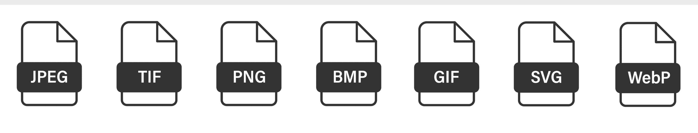

Compressie is een manier om bestanden zoals foto's, video's en muziek kleiner te maken, zodat ze minder ruimte innemen op je computer of sneller kunnen worden verzonden via internet.
Er zijn twee soorten compressie:
1.Verliesloze compressie: Dit maakt het bestand kleiner zonder dat er iets verloren gaat. Als je het bestand weer opent, ziet het er precies zo uit als het eerst.
2.Verlieslatende compressie: Hierbij worden sommige details weggehaald die je niet snel merkt. Dit maakt het bestand veel kleiner, maar soms gaat de kwaliteit wel een beetje achteruit.
Verschillende soorten bestanden gebruiken compressie om kleiner te worden
Dit zijn er een paar maar er bestaan er nog veel meer:
-ZIP en RAR: Deze formaten gebruiken verliesloze compressie. Als je het bestand opent, is alles nog precies hetzelfde als het origineel.
-JPEG: Een veelgebruikte compressiemethode voor foto's. Het bestand wordt kleiner door details weg te laten die je vaak niet opmerkt. Bij te veel compressie kan de foto wazig of blokkerig worden.
-PNG: Dit is een ander bestandsformaat voor afbeeldingen, maar met verliesloze compressie. Dit betekent dat de kwaliteit van de afbeelding goed blijft.
-MP3: Een veelvoorkomend formaat voor muziek waarbij bepaalde geluiden worden weggelaten om de grootte van het bestand te verkleinen. Dit kan een beetje invloed hebben op de geluidskwaliteit.
Er zijn twee manieren om afbeeldingen op te slaan: als bitmap of als vector.
-Bitmap-afbeeldingen (zoals JPEG of PNG) bestaan uit allemaal pixels. Hoe meer pixels, hoe scherper de afbeelding. Maar als je een bitmap vergroot, worden de pixels zichtbaar en wordt het beeld wazig of blokkerig.
-Vectorafbeeldingen (zoals SVG) bestaan uit vormen die met formules worden getekend. Je kunt ze zo groot maken als je wilt zonder verlies van kwaliteit. Vectoren worden veel gebruikt voor logo's en illustraties, omdat ze altijd scherp blijven, hoe groot de afbeelding ook is.
Beelden en geluid worden op verschillende manieren opgeslagen, het hangt ervan af watvoor type bestand
-Beelden: Bitmapafbeeldingen slaan elke pixel op, dit kan veel ruimte innemen. Daarom gebruiken we hiervoor vaak compressie.
Voor foto's gebruiken we meestal JPEG (verlieslatend) omdat kleine details niet zo heel belangrijk zijn.
Voor logo's of simpele afbeeldingen gebruiken we PNG (verliesloos) om de kwaliteit te houden.
-Geluid: Geluid (zoals in WAV-bestanden) heeft veel ruimte nodig omdat alle details worden opgeslagen.
MP3 gebruikt verlieslatende compressie, hierdoor wordt de bestandsgrootte kleiner door bepaalde geluiden te verwijderen die de mensen niet snel horen.